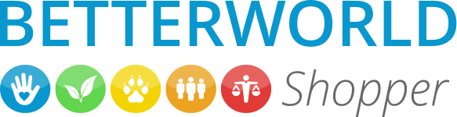

Things We All Should Know: A Simple Guide to Sustainability
Hello! My name is Payton Reed. I am just a regular person who is passionate about the environment. The goal of this website is to give other people the knowledge and tools to make simple, everyday choices to benefit our planet. Let's all be part of the solution, not the problem!
The Facts
- Our planet has less than 7 years left to achieve 0 carbon emissions by before the environment is damaged irreveribly.
- The Great Pacific Plastic Garbage Patch stretches 1.6 million km2,twice the size of Texas.
- If consumption patterns remain, the world's rainforests will be gone by 2100, the oceans' seafood by 2050, and drinkable water by 2040.
- If Earth’s history is compared to a calendar year, modern human have only existed for about 37 minutes, and one third of Earth’s natural resources have been consumed in the last 0.2 seconds.
- Each day, American businesses generate enough paper to circle the Earth 20 times.
- Americans use an average of 2.5 million plastic bottles every hour, most of which are thrown away.
- Toilet paper requires 27,000 trees to be cut down per day.
- Less than 1% of the water supplies found on Earth are usable by people. 97% of water is found in the oceans and 2% exists as frozen water.
- Every day, more than 20 million Hershey’s Kisses are produced using 133 square miles of tin foil, all of which can be recycled.
- Up to half of all food produced is lost or wasted before or after it reaches consumers.
The Solutions
The US government has several important policies to enforce sustainable practices and to advocate for the planet.The Clean Air Act requires the EPA to work with the states to reduce greenhouse gas emissions. Several energy policy laws ensure that the Department of Energy partners with the private sector to improve clean energy technologies and set efficiency standards. The Department of Transportation has laws to ensure improved fuel economy of vehicles, and the Department of Defense is bound by law to plan for the consequenses of global climate change. But government regulation still has a long ways to go. One exciting new proposal is the Green New Deal by Representative AOC. It calls for a plan to decrease the US's use of fossil fuels and greenhouse gas emissions while stimulating new jobs in clean energy sectors.
There are also several new promising emerging technologies that are aimed towards clean energy and climate protection. HERMES is a cold fusion concept to capture excess hear during heavy water electrolysis as a form of clean energy. MetaVEH is a innovation to harvest electrochemical energy and have the potential to replace harmful batteries. TPX-Power is a project that aims to recover thermo energy from waste heat during photon transport. And LICROX is another project focused on solar fuel production from the chemical energy storage in photosynthesis.
Your Impact: At Home Solutions
- Be more water conscious:take showers over baths, hand-wash dishes, turn of sink when brushing teeth etc.
- Unplug (not just turn off) electronics when not in use
- Recycle properly: research your local recycling regulations
- DIY your cleaning products to reduce plastic and chemical exposure
- Try growing a local garden for fresh produce, or start a compost pile
Next Steps for more Info
Organizations for Change
There are several companies with awesome environmental innitiatives that as a consumer you can feel comfortable and confident patronizing. Ford automotive company has new environmental policies that include the use of sustainable and recycleable materials in their vehicles and an emphasis on fuel efficiency. Factories even recycle paint fumes as fuel and use geothermal cooling systems. Disney has policy focused on zero net greenhouse gas emissions, zero waste policy, and decreasing water use and carbon emissions.Lastly, Nike has created entire lines of sustainable products like clothing and shoes made from recycled materials. Nike is also a leader in renewable energy use.
According to Better World Shopper, a public research collective,the worst social and environmentally responsible companeis include Exxon-Mobil, Walmart, GM, and even the Pittsburgh staple, Kraft Heinz. Click the image for more information on other popular companies and to become a more ethical consumer.
If you have a few extra dollars, and would like to put your money towards a great cause, here are some amazing environmental charities that are making a huge difference in the world.